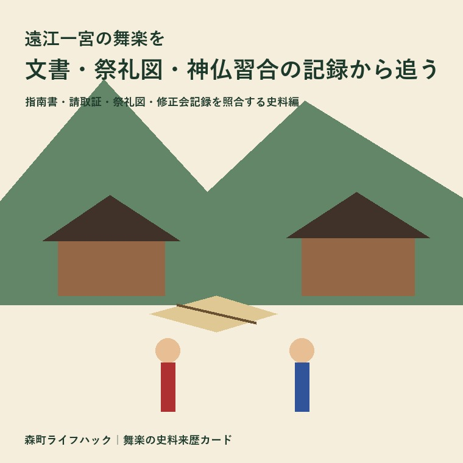
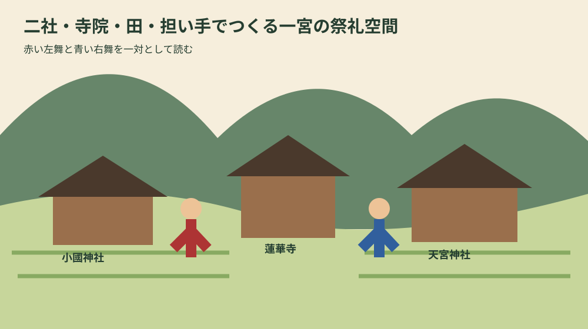
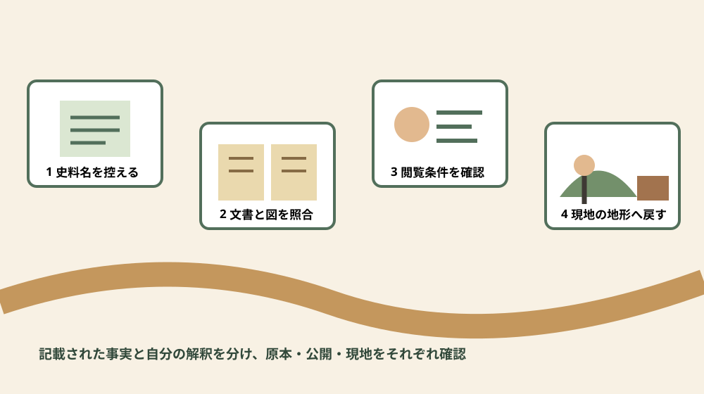

歴史・舞楽・古文書
遠江一宮の舞楽を文書・祭礼図・神仏習合の記録から追う

この記事の要点
Q. 遠江一宮の舞楽は、何を手掛かりに歴史をたどれますか？
A. 1677年の指南書、1697年の面等請取証、祭礼図、修正会の記録を重ねると、舞だけでなく、寺院・神人・武士・若者衆・田や寄進が支えた仕組みまで見えてきます。
導入——日程ではなく、残された史料を読む
小國神社と天宮神社の十二段舞楽を検索する人の多くは、いつ、どこで見られるかを知りたいはずです。本稿が扱うのは、その一歩前にある「なぜ二社に舞楽が伝わり、誰が何を残したのか」という問いです。開催時刻、駐車場、当日の交通をまとめた祭礼日程記事とは検索意図を分け、文書・図像・宗教組織を読む史料編とします。
中心資料は森町公式「35 遠江一宮の舞楽の歴史」です。ページには一宮舞楽指南書、舞楽面等請取証、遠江一宮の祭礼図が掲げられ、担い手、費用、思想、年表まで説明されています。もう一つの必須資料「38 一宮の田遊び・神楽舞」は、舞楽と隣り合う修正会や神楽に神仏習合の痕跡がどう残るかを示します。
補助資料として「36 小國・天宮両社の舞楽」と「10 一宮の成立と密教の隆盛」も参照します。現在の指定状況は森町公式の文化財一覧で確認します。史料が語る時代と、現在の文化財制度や公開状況は同じではないため、年代を混ぜません。
なお「図説森町史」は平成11年2月発行時の情報を用い、最新情報と異なる場合があると町自身が注意しています。本稿は歴史理解の入口です。現在の演目、奉納時間、原資料の閲覧可否は、観覧や調査をする時点であらためて公式情報へ確認してください。
まず押さえる十五の具体的事実
事実1。町史は舞楽を、大陸から渡来したとされる雅楽に舞を付したものと説明します。唐楽は左舞、西域系、赤色装束、高麗楽は右舞、朝鮮・満州系、青装束に分類され、平安時代藤原期に大寺社などで全盛を迎えました。
事実2。地方への伝播では、舞楽が密教寺院やそれと融合した大社の法会・神事に組み込まれました。童舞、すなわち稚児舞楽は鎌倉前期に盛行し、小國・天宮の舞楽も同様の稚児舞楽と位置付けられています。
事実3。遠江一宮の舞楽は、本来寺院方の行事でした。蓮華寺を中心とした一宮一山組織、両社の神人、天台系寺院の僧侶に加え、国司、守護・地頭など武士層が関係したと町史は説明します。
事実4。両社では十二段の舞楽が行われ、遠江国の豊饒と国家の安泰を祈ったとされています。現在の地域芸能という枠だけでなく、一国規模の祈りという歴史的文脈が置かれています。
事実5。天正18年、円田郷粟倉の鈴木太郎左衛門、別名左近が舞楽役となりました。同家は近世を通じて小國・天宮両社の舞を司ったと町史に記されています。
事実6。1677年、延宝5年の「一宮舞楽指南書」は、楽頭鈴木武左衛門尉が記したものです。町公式解説は、現在もこの内容に従って舞われていると述べています。口伝だけでなく、動きを継ぐ基準となる文書があったことが分かります。
事実7。1697年、元禄10年の「舞楽面等請取証」は、小國・天宮両社同時造営の際、祭具を修理に出したときの請取です。記載品には菩薩面が含まれます。面の名称、修理、受渡しという物の履歴が残る史料です。
事実8。「遠江一宮の祭礼図」には、小國神社の色香、すなわち菩薩舞が描かれます。神主は拝殿から、名主層は桟敷で見物しています。舞手だけでなく、見る人の位置と身分関係を読み取れる図像です。
事実9。小國方の舞楽賄いでは、神社から米10俵が神宮寺に支給され、楽頭や色香舞などには扶持田が配当されました。町史は舞楽一切を神主、旦那が支えたと説明します。
事実10。天宮の祭礼では、若者衆の天社轂が大きな担い手となり、舞楽や行道など全ての段取りを担いました。費用面では天宮神領内の法事田、別名祭礼田と、町場の旦那衆の寄進が支えました。
事実11。町史は一宮地域を金胎両部の思想に二分し、左方・右方にも意味付け、両社の舞楽を一対としたと説明します。その一対が遠江の豊饒と国家安泰を祈る「一宮の曼荼羅」を形づくったという理解です。
事実12。年表では1543年、天文12年に、天宮社が金胎両部の一社であることを今川氏が認めたとされます。1583年には家康が小國鹿苑大菩薩社を、1589年には天宮菩薩社を造営したと記されます。
事実13。1804年、享和4年に舞楽法会が昼となり、1806年、文化3年に試楽が八段から十二段となって天宮が正式となりました。伝統は最初から固定された一枚岩ではなく、時間帯や段数にも履歴があります。
事実14。小國神社の田遊びは毎年正月3日午後、修正会の行事として舞殿で行われると町史にあります。神宮寺側には「修正会導師法則」の記録が残り、神仏一体の修正会が行われていたことを示します。
事実15。現在の森町公式文化財一覧では、小國神社十二段舞楽、天宮神社十二舞楽、山名神社天王祭舞楽を合わせた「遠江森町の舞楽」が国の重要無形民俗文化財として掲載されています。歴史上の「遠江一宮の舞楽」と現在の指定名称は分けて読みます。

史料来歴カード——五つの固定欄で比べる
カード1「一宮舞楽指南書」。記載年代は1677年。対象は一宮舞楽の舞い方、継承先は小國・天宮両社で、町史は現在も内容に従うとします。円田の個人所蔵で、町公式ページでは画像と解説を公開。原本閲覧・転載条件は未確認です。
カード2「舞楽面等請取証」。記載年代は1697年。対象は両社同時造営時に修理へ出した面・装束・諸道具で、菩薩面の記載があります。対象先は小國・天宮両社。円田の個人所蔵文書で、公式ページに画像と解説がありますが、原本公開条件は別途確認が必要です。
カード3「遠江一宮の祭礼図」。作成年代は今回の町公式解説では確認できません。描かれる演目は小國神社の色香（菩薩）舞で、神主と名主層の観覧位置も記録します。個人所蔵で公式ページに画像があり、原図の閲覧・利用条件は未確認です。
カード4「修正会導師法則」。記載年代は今回の解説では未確認。対象は小國神社の田遊びが組み込まれた神仏一体の修正会です。神宮寺側に記録が残存するとされ、伝承先は小國神社の正月行事。画像、所蔵者、原本公開条件は町公式ページだけでは分かりません。
カード5「天宮文書」。記載年代は1543年で、「乙女」の語があり、町史は乙女神楽がすでに舞われていたと考えます。伝承先は天宮神社で、のちに森地区の三嶋神社にも伝えられたと説明されます。今回のページでは所蔵者と原本公開条件を確認できません。
この五カードの独自性は、三社の舞を比べたり当日の参加方法を示したりせず、史料の来歴と公開確認の穴を同じ書式で見せる点にあります。年代不明、所蔵不明を欠点として埋めず、次の照会事項として残します。
一枚目の史料——1677年の指南書は「舞い方」を固定したのか
一宮舞楽指南書の重要点は、書かれた年代と書き手が明示されることです。1677年に楽頭鈴木武左衛門尉が記したという事実は、天正18年に舞楽役となった鈴木家の役割が、近世の文書へつながったことを示します。
ただし「現在もこの内容に従う」という町史の一文を、三百年以上まったく同じ動きだったという意味へ広げるのは慎重であるべきです。文書を規範にしたことは確認できますが、稽古の教え方、装束、舞台環境、担い手の年齢まで不変だったとは本稿の資料だけで言えません。
二枚目の史料——1697年の請取証から道具の移動を追う
舞楽面等請取証は、信仰の教義を説明する文書ではなく、修理へ出した物の受渡し記録です。だからこそ、祭礼を続けるには面、装束、諸道具を手入れし、誰かが預かり、戻す実務が必要だったことを具体的に示します。
1697年には小國・天宮両社の同時造営があり、年表には12月4日の小國遷宮、同9日の天宮遷宮が記されます。建物、面、装束、祭礼が別々でなく、造営を機にまとめて整えられた様子が見えます。
請取証に菩薩面が記される点は神仏習合を考える手掛かりです。しかし面の名だけで用途の全ては決まりません。祭礼図の色香（菩薩）舞、寺院方の行事という説明、神宮寺への米支給を重ねて初めて、物と組織の関係が立体的になります。
三枚目の史料——祭礼図は観客席まで記録する
祭礼図の魅力は華やかな色香舞だけではありません。神主が拝殿、名主層が桟敷という配置が説明され、見る側も祭礼の構造に組み込まれていたことが分かります。誰がどこから見たかは、権威と役割の可視化でもあります。
図像を現在の写真のように扱うことはできません。絵には強調、省略、様式があります。建物の寸法や人数をそのまま測るより、何が描かれ、何が区別され、視線がどこへ導かれるかを文書の記載と照合する読み方が適しています。
既存の日程記事が「当日どこに立つか」を助けるのに対し、本稿は「図の中で誰がどこにいたと記録されたか」を問います。同じ舞楽でも、来訪案内と史料解釈では答える問いが違います。
神仏習合を、抽象語で終わらせない
神仏習合という言葉は便利ですが、説明を曖昧にもします。遠江一宮では、蓮華寺を中心とする一宮一山組織、天台系寺院の僧侶、神人、神宮寺への米支給、菩薩面、色香舞、修正会導師法則という具体物・具体名へ分解できます。
「10 一宮の成立と密教の隆盛」は、小國社の奥院本宮山を頂点とする天台系一山組織が確立し、それが遠江国一宮の成立につながったと説明します。また清原氏が散在する神田を一円化し、小國社の経済基盤を確立したとします。
地形も思想の背景です。「小國・天宮両社の舞楽」の写真解説は、中央山頂に小國神社の本宮奥岩戸神社の社叢、手前に一宮円田郷の水田、その東に蓮華寺がある景観を示します。山、田、寺、二社を離れた点ではなく、関係する場所として見せます。
金胎両部は密教の金剛界と胎蔵界に関わる枠組みです。町史は一宮地域を二分し、両社の舞楽を左方・右方の一対に意味付けたとします。本稿では教義を独自に補わず、町史が示す「二社で一対」という範囲を確実な説明とします。
田遊びと神楽を隣に置く理由
指定された1726ページは舞楽そのものだけを扱うページではありません。小國神社の田遊びと小國・天宮の神楽舞を説明します。隣接する芸能を見ることで、一宮の祈りが十二段舞楽だけに閉じていなかったことが分かります。
田遊びは詞章を唱えることが基本で、しら鍬、畔ぬり、代掻牛、苗草せおいなど全十二段により、田植え前までの仕事を予祝します。舞楽の十二段と段数が同じでも、内容と由来を同一視してはいけません。
田遊びの詞章には「本家・粟倉殿」など荘園組織をうかがわせる内容があり、町史は鎌倉期に幕府の統制下で一宮の祈願として伝えられたと考えます。修正会導師法則の存在は、正月行事が神社だけで完結しなかった痕跡です。
天宮の乙女神楽は四人が氏子から選ばれ、御幣と鈴を持ち、篠笛と大太鼓に合わせる全三段です。1543年の天宮文書に「乙女」とあり、当時すでに舞われていたと町史は考えています。舞楽、田遊び、神楽は担い手も道具も構成も違います。
支えたのは舞手だけではない
舞楽を舞台上の動作だけで理解すると、神宮寺へ支給された米10俵、扶持田、法事田、旦那衆の寄進が見えなくなります。芸能の継承には、稽古と本番に加え、田からの収入、道具修理、衣装保管、行道の段取りが必要でした。
天宮では若者衆が全体の段取りを担いました。「小國・天宮両社の舞楽」には旧神宮寺の建物が現在も練習所であるとの説明もあります。宗教組織が変化した後も、場所が稽古を支える例として読めます。
現在の担い手負担を近世の仕組みから直接推定はできません。仕事、学校、衣装費、交通、安全管理など今日の条件は、保存会や神社への取材が必要です。古文書は負担が昔から存在したことを示しても、今の金額や人数までは答えません。
良い点
町公式では、指南書、請取証、祭礼図、略年表を同じページで見比べられます。動作、道具、観客、費用、思想に偏らず、祭礼を複数の証拠から考える入口になります。
隣のページへ進めば、実際の舞の写真、練習所、神領域の遠景、田遊びと神楽の詞章までつながります。資料館へ行く前に問いを作り、「原本でどこを確認したいか」を明確にできます。
注文したい点
一方、写真だけでは文書の全体寸法、料紙、文字数、欠損、裏書、翻刻の範囲が分かりません。史料名、年代、所蔵区分、画像利用条件、関連する調査報告への導線が揃えば、教育や調査でさらに使いやすくなります。
現在の観覧案内は別の層で必要です。奉納日時、変更の可能性、撮影、立入場所、公共交通、駐車を史料解説へ混ぜず、最新ページへ明確にリンクする形が望ましいと考えます。

対案・結論
第一カードは指南書です。「1677年、楽頭鈴木武左衛門尉、舞い方、円田個人所蔵」と記します。町史の説明と自分の推測を同じ欄へ書かず、未確認事項として翻刻、改訂、書込みの有無を残します。
第二カードは請取証です。「1697年、両社同時造営、修理、菩薩面」と記し、年表の遷宮日と結びます。修理先や点数など公式ページで分からない情報は空想で補いません。
第三カードは祭礼図です。「小國、色香（菩薩）舞、神主は拝殿、名主層は桟敷」と、描かれた配置を記録します。絵から読み取ったことと、解説文に書かれたことを色分けします。
第四カードは修正会導師法則です。「神宮寺側に残存、神仏一体の修正会」と記します。田遊び十二段、正月3日、社家奉仕という関連情報を添えますが、舞楽指南書とは別史料として管理します。
四枚を年代順に並べると、教義だけでも演目だけでもない歴史になります。場所、文書、物、資金、担い手の列を作れば、どこに根拠があり、どこからが解釈かを家族や学習グループで共有できます。
家族と地域の記録へつなぐ
家に舞楽の写真、古い案内、寄付の控え、衣装や道具の記憶がある場合、まず撮影日、人物、場所、所有者、公開してよい範囲を記録します。個人名や子どもの写真を、歴史的価値があるという理由だけで無断公開しません。
寺社に近い実家や土地の整理では、祭礼時の通行、駐車、音、人の流れを現在の管理事項として確認します。歴史上の神領や祭礼田の説明を、現在の所有権や通行権へ直結させることはできません。登記、境界、道路は別資料で確かめます。
大石の視点
ここからは私、大石浩之の意見です。指南書や請取証を読むと、伝統は「昔から自然に残った」のではなく、書く人、修理に出す人、米や田を割り当てる人、稽古場所を守る人の連続で残ったと感じます。現在も舞手だけに感謝して終わらせない視点が必要です。
小さな不動産業者として寺社周辺の実家を考えるときも、文化財が近いという印象だけで価格を決めません。道路、境界、登記、農地、祭礼時の動線、維持管理、家族の希望を分け、確認済みと未確認を一枚にします。
歴史的な祭礼田や神領の記述は地域理解に重要ですが、現在の筆の権利関係を証明するものではありません。古文書の地名と今の地番が似ていても、法務局資料、町の担当窓口、必要に応じ専門家へ確認します。
売るか残すか未定の段階でも、家族写真や古文書の由来と、土地建物の名義・境界を別々に整理できます。ふじがおか実家カルテの森町相談窓口では、文化の記録を捨てずに、不動産の確認順を組み立てる相談も可能です。
よくある質問
この記事は舞楽の開催日案内ですか
いいえ。史料の年代、書き手、所蔵、描かれた配置、神仏習合の構造を読む記事です。観覧情報は神社と町の最新案内で確認してください。
一宮舞楽指南書はいつの文書ですか
1677年、延宝5年に楽頭鈴木武左衛門尉が記したと町史は説明します。円田の個人所蔵資料で、現在も内容に従って舞われるとされています。
二社の舞楽はどう関係しますか
町史は一宮地域を金胎両部に二分し、左方・右方に意味付けた両社の舞楽を一対として説明します。それぞれの違いを消すのではなく、一対の構造を見ます。
神仏習合は何から分かりますか
蓮華寺中心の一山組織、神宮寺への米支給、菩薩面、色香舞、修正会導師法則など、異なる種類の記録を重ねて確認できます。
原本を見たり写真を使ったりできますか
個人所蔵とされる資料があります。町公式画像が公開されていても、原本閲覧や画像転載が自由とは限りません。所有者と文化振興係へ確認します。
まとめ
遠江一宮の舞楽は、1677年の指南書が舞い方を、1697年の請取証が道具修理を、祭礼図が舞手と観客の配置を、修正会導師法則が神宮寺側の祈りを伝えます。四つを重ねることで、舞台だけでは見えない継承の仕組みが浮かびます。
小國・天宮の二社は別々に伝承を守りながら、町史では金胎両部、左方・右方の一対として説明されます。その背景には蓮華寺、一山組織、武士層、神人、僧侶、若者衆、田、寄進がありました。
次に公式ページを見るときは、史料名、年代、書き手、所蔵、何を記すか、何は分からないかの六欄を作ってください。開催日を知る記事とは別の入口から、舞楽が残った理由を具体的にたどれます。
参考にした公式情報
- 35 遠江一宮の舞楽の歴史／静岡県森町（2026年8月17日確認）
- 38 一宮の田遊び・神楽舞／静岡県森町（2026年8月17日確認）
- 36 小國・天宮両社の舞楽／静岡県森町（2026年8月17日確認）
- 10 一宮の成立と密教の隆盛／静岡県森町（2026年8月17日確認）
- 文化財／静岡県森町（2026年8月17日確認）

最終確認日：2026-08-17 ／ 公表事実と執筆者の解釈・意見を分けています。開催・公開・閲覧条件は最新の公式情報でご確認ください。